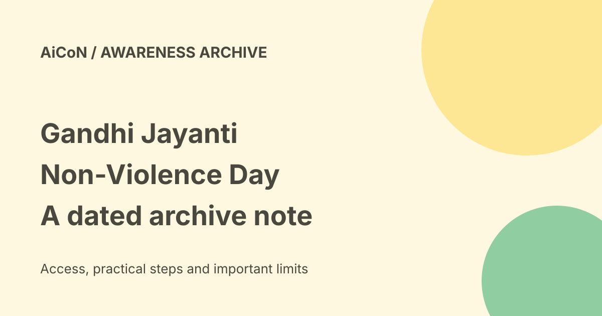

Gandhi Jayanti 2026: the UN Non-Violence Day and a dated archive note
The AiCoN post marked 2 October 2026. That day has passed. The United Nations observes 2 October as the International Day of Non-Violence, on Mahatma Gandhi's birthday. This is an educational archive page, not a current event or registration notice.

Why 2 October?
The United Nations identifies 2 October as Gandhi's birthday and the International Day of Non-Violence. Its page describes him as a leader of the Indian independence movement and a pioneer of the philosophy and strategy of non-violence.
AiCoN's original 2026 post was a commemoration, not an application scheme, contest or paid offer. Preserve that distinction when sharing it after the date. We do not call 2 October "today" on this archive page.
The United Nations resolution
The General Assembly established the observance through resolution A/RES/61/271 on 15 June 2007. The UN says the occasion is meant to spread the message of non-violence through education and public awareness. The resolution also affirms peace, tolerance, understanding and non-violence.
This is a worldwide observance. It does not create a cash benefit, student registration programme or automatic holiday rule in every workplace. For an employer or school's closure arrangements, check that institution's own notice.
What non-violence means here
The UN background describes non-violent resistance as rejecting physical violence to achieve social or political change. It gives protest and persuasion, non-cooperation and non-violent intervention as categories. Non-violence is not the same as ignoring conflict or accepting every demand.
For a classroom or personal reading activity, read the UN explanation, separate historical facts from opinion, and discuss how to disagree without violence. Use quotes from a traceable original source rather than attributing a circulating social-media line to Gandhi without evidence.
Do not reuse an old event time
The checked UN page still includes a 2025 observance at UN headquarters in New York. That is not a 2026 or 2027 invitation. We did not find or verify a fresh 2026 event schedule on this page, so this guide does not list one.
If you want to attend a local programme, use the organiser's current notice for the date, place, audience and registration terms. Do not travel based on a past-year block on a general observance page.
Offer and quiz forwards need their own source
A message mentioning Gandhi Jayanti does not establish that a gift, reward or quiz is official. Do not share an OTP, payment PIN or account credential to claim one. If a forward names a government or UN programme, locate that programme through its official site and check its actual terms.
This archive page makes no reward offer and collects no application details. It does not certify a third-party quiz or discount just because it uses the same observance.
Simple ways to use the archive
- Read the current UN page for the purpose and background.
- Label the original AiCoN note as 2 October 2026 when reusing it.
- Keep any new event or offer separate until you verify its organiser and terms.
- For educational sharing, cite the UN source and avoid invented quotes or results.
Frequently asked questions
Is this an upcoming event?
No. It preserves a past AiCoN awareness post and explains the annual observance.
Is the UN's 2025 event time valid for 2026?
No. A past-year event block must not be reused as a current schedule.
Does this post promise a reward?
No. A reward claim needs its own verified official notice.
What changed since the earlier post?
The general observance and 2007 resolution remain grounded in the UN page. We made the 2026 date explicitly historical, omitted unneeded birth-place/anniversary details rather than repeating unverified extras, and flagged the old 2025 event block. No programme attendance, registration or schedule monitoring was performed.
Sources: United Nations observance. Checked 8 October 2026.